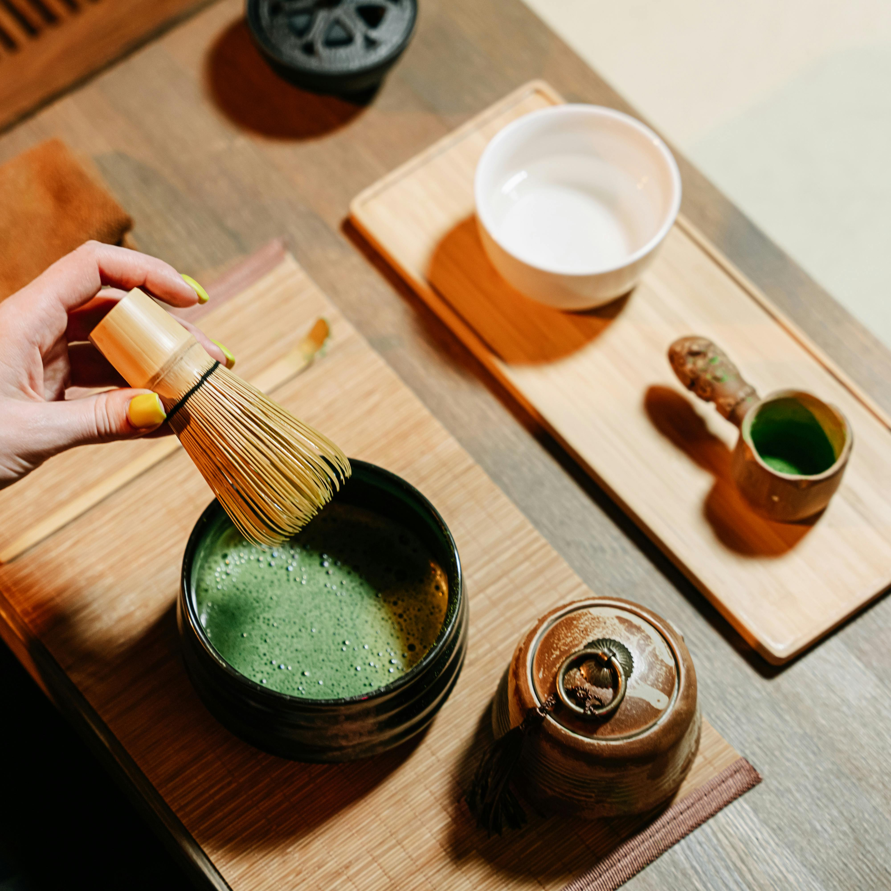
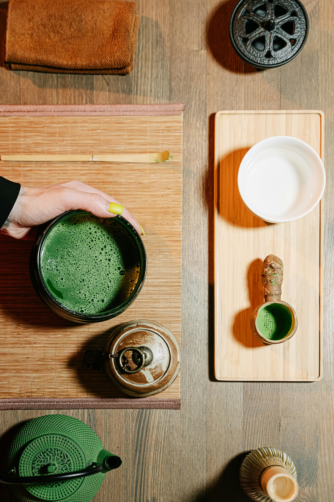

Notre histoire
A propos de Vamatcha
Chez Matcha Tea, nous croyons que chaque personne se doit de goûter au plaisir de cette petite merveille en provenance du Japon. Le thé matcha est considéré comme un superaliment. Cette poudre d’un vert électrique, est riche en bons nutriments et particulièrement en antioxydants et vitamines A, C et E. Nous sommes une entreprise passionnée et spécialisée dans la confection de délicieux thés matcha. Que ce soit le goût naturel du matcha en passant par le matcha goût vanille ou encore celui à la fraise, notre entreprise locale travaille à confectionner sur mesure ses petites merveilles.
Notre engagement
Matcha Tea ne fait aucune concession sur la qualité et l’origine de son thé matcha. Chaque étape de production est exclusivement réalisée au Japon : le matcha, les arômes et le conditionnement. Chaque production est testée qui garantit une absence totale de présence de pesticides dans nos produits.
Pourquoi choisir le thé matcha ?
- Grâce à la théanine qu’il contient, il apporte une énergie douce et constitue une bonne alternative au café.
- Il est antistress et relaxant. Ce n’est d’ailleurs pas pour rien que les moines bouddhistes zen consomment du thé matcha depuis des siècles pour leurs méditations !
- Il aide à la régulation de la glycémie et du microbiote intestinal.
- Il améliore le système immunitaire grâce notamment aux antioxydants et vitamines qu’il contient.
- Il accroît les performances sportives et aide l’organisme à récupérer après l’effort. Ceci est principalement dû à la haute teneur en antioxydants qui favorisent l’oxygénation des muscles. Il permet également de réguler la production d’acide lactique, responsable des crampes musculaires.
Nos services
Vente de matcha
Matcha Tea offre un service de vente de matcha de qualité nature ou parfumé. Que ce soit une occasion pour déguster seul ou en groupe notre thé matcha, notre équipe vous offre le meilleur du thé matcha venu directement d’une petite entreprise au Japon.Vente d’accessoires matcha
Notre équipe vous offre des accessoires de qualité pour perfectionner votre thé matcha et en faire comme des professionnels.